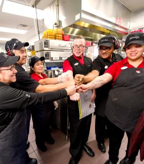
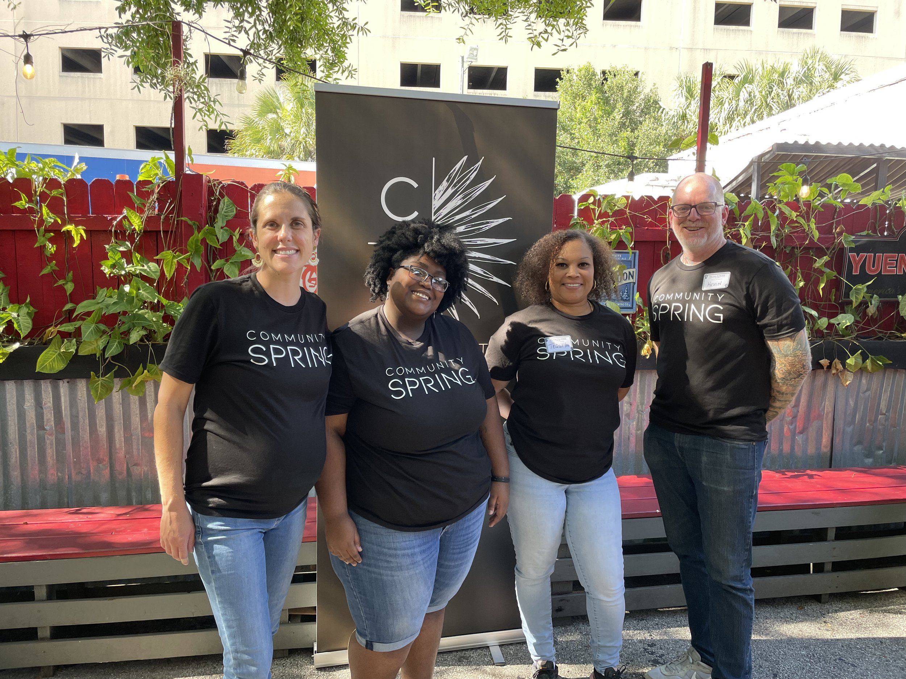
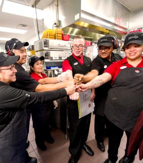
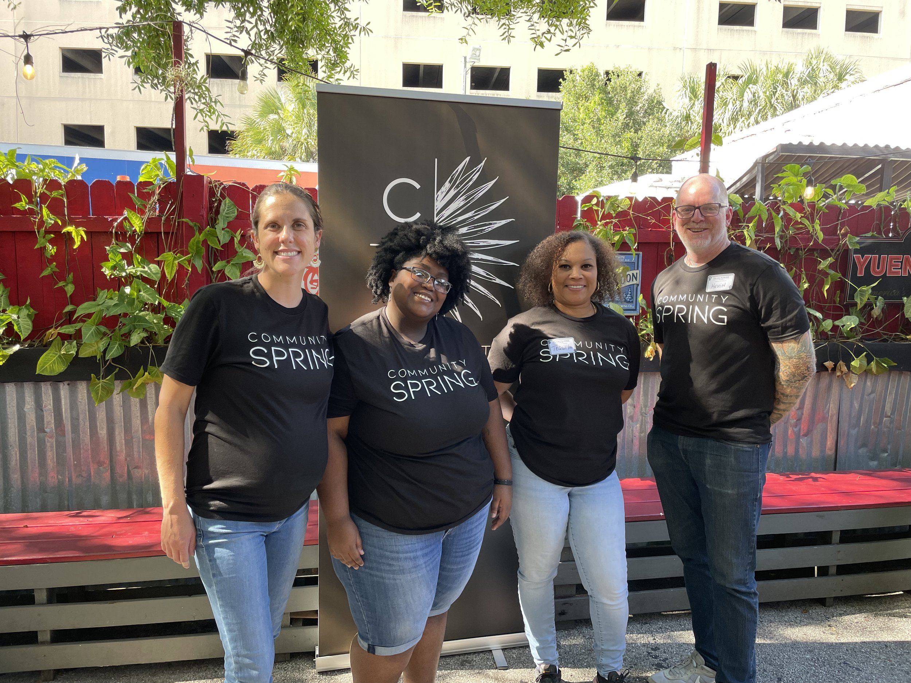

Jacky Zhang
As a first-year student at UC Riverside, I am eager to explore all the opportunities that college life has to offer, including finding a part-time job. While the prospect of balancing schoolwork with a job may seem daunting, I am confident that I have the skills and determination to thrive in both areas.
One of the primary reasons I am interested in seeking employment is to gain hands-on experience in a professional setting, which will help me develop skills that cannot be taught in the classroom. Additionally, I believe that having a job will enable me to become more self-sufficient and responsible, as I will have to manage my time and finances more effectively.
Overall, I see obtaining a job as an important stepping stone in my personal and professional development, and I am excited to see where this new opportunity will take me.
Experience
General Member
• While working at Wendy’s, I gained experience in the working field for the first time.
• Even though I was new to the working field I was able to adapt and get used to the working environment in less than a week.
• I served customers with the best care and respect.
Server
• While working at my first “All You Can Eat” Korean BBQ restaurant I realized the difference between working at a fast food restaurant and an actual restaurant.
• An actual restaurant requires you to think critically and efficiently while also communicating with customers efficiently.
Server
• Working at Shabuya made me realize just how important the working environment is.
• Working environment can affect your performance during work.
• I gained the most experience not only through the working field but also real life situations.
• Working at shabuya felt like hanging out with friends. I treated my customers and co-workers like they were family.
Education
Alhambra High School
University of California Riverside
LEO Service Club
Portfolio




 